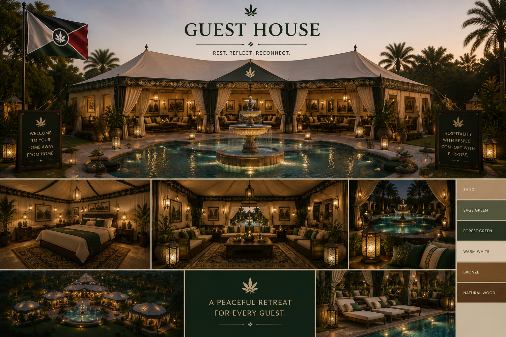
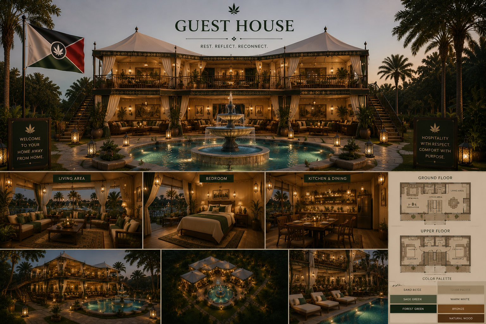

Standard Guest House
A calm and elegant guest tent designed for rest, comfort, and short stays. Includes sleeping space, lounge area, warm lighting, and access to the swimming fountain.
Official Digital Archive
One Nation. Four States.
One Principle.
Respect
The Obedient
The Obedient is a fictional nation identity project built around respect, symbolism, philosophy, flags, currency, and visual storytelling. It is presented as a digital book and national archive.
The national identity of The Obedient consists of four official state flags. Each mode represents a condition of the nation and its values.
X Mode is the primary national flag. It unites the Grey, Black, and Red modes into one official symbol.
The official currency consists of 10, 20, 50, and 100. The visual system focuses on nature, symbols, and national identity.
The House of Connection is a peaceful gathering place of The Obedient. It represents hospitality, unity, nature, and respect. The tent stands as a symbolic home where people meet, share stories, and build connection.
A welcoming space built for guests, conversation, and shared respect.
Placed in greenery to represent peace, balance, and harmony with life.
A symbolic house where people gather, listen, and understand one another.
Official transportation approved by The Obedient.
A peaceful retreat for visitors of The Obedient. Guests can choose between a standard guest house and a deluxe double-deck guest house.

A calm and elegant guest tent designed for rest, comfort, and short stays. Includes sleeping space, lounge area, warm lighting, and access to the swimming fountain.

A premium two-level guest house with bedroom, lounge, kitchen, dining space, private toilet, balcony, and direct view of the fountain swimming pool.
Essential public spaces of The Obedient, including the supermarket and restaurant, designed for daily life, gathering, and connection.
The House of Forgiveness is a place dedicated to reflection, reconciliation, and inner peace. Visitors are encouraged to leave behind resentment and begin again with respect and understanding.
A peaceful environment where visitors can reflect, forgive, and reconnect with themselves.
A deep red Arabian-inspired tent surrounded by gardens, lanterns, and a central fountain to create a calm atmosphere.
Forgiveness, peace, compassion, healing, and new beginnings.
Autonomous aid and security units designed to patrol, assist citizens, deliver supplies, and respond to emergencies across The Obedient.
02 July 2026
The Obedient has officially released its first set of guiding principles. These principles define the values of the nation and the responsibilities shared by every citizen.
Everyone will pay for their actions. Be careful with your choices.
Your life is important. You are part of society.
Murder, serious crimes, and severe harm are punished based on the crime.
Everyone is welcome, no matter their colour, religion, or race.
The real currency of The Obedient is respect and love.
“One Nation. Four States. One Principle: Respect.”
Swipe left or right to turn the page